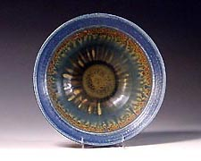
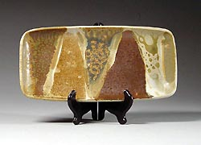
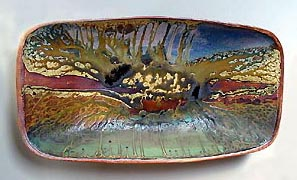
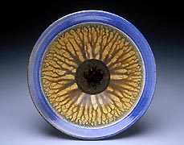
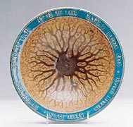
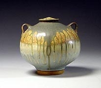
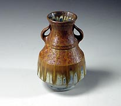
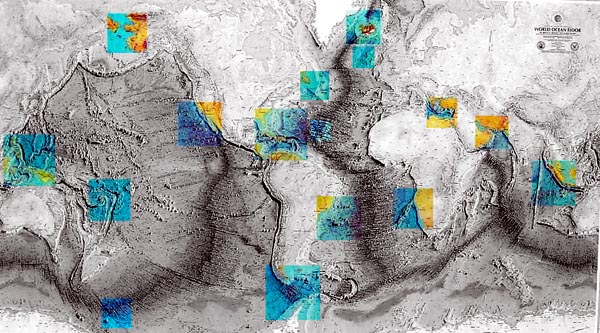

| Ocean Sediment Glazes
by Joan Lederman 
Communities
of organisms, dead and alive, have settled in layers on the ocean
floor and are sometimes taken by researchers as core samples. Occasionally,
I get their excess. I learned that most samples melt into a glaze
at cone 10 and 11.
They each have a character of their own. While the glazes that
humans have concocted are often exquisite... they have a different
voice. They are more contrived from nature than they are released
by nature. I achieve my results by thinning the mud-like ocean
sediments with fresh water and applying them like any glaze.
Many make branching patterns like river deltas, our brains, and
some potters say, like ash glazes. They appear to flow downward
while crystallizing upward. Some look waxy and thick, and some look
glassy and liquid.

How might this be useful to other potters? A potter with persisting
interest could find out which institutions send ships out to collect
cores. Possibly a Google search on coring would offer names of all
the archives in the world and approaching one by one might turn
up some samples.

I began this process when a sample arrived at my door and the kiln
was on, so I stuffed some into a spy hole. It melted. The next test
was a bisque firing and in a third test sediment was thinned with
water and applied to clay. That’s when I discovered foraminifera
- small calcium carbonate shells which science uses to date materials.
In nine years of using these materials, I observed that sediments
with foraminifera usually make branching patterns. So far, no sediments
from the Pacific Ocean have made branching patterns.

I’ve used materials from various locations,
including the Arabian Sea, the Dead Sea, the Red Sea, the Mediterranean,
the Bering Straits and the Black Sea, the Indian Ocean, Pacific
Ocean, Southern Ocean and the Atlantic Ocean, as well as materials
from hydrothermal vents and crust slurry from the mid-Atlantic Ridge
crust. I’ve also learned that magma within the Earth, which
takes many forms after volcanic eruptions, and land samples in Iceland,
are similar to those in Hawaii. This should come as no surprise,
since we all do float on the same core.

I live in Woods Hole, Massachusetts, USA. It is a
deep-water port and home to many research institutions, including
the Woods Hole Oceanographic Institution,
which is how I happened to receive these materials. I mark the source
locations on the pots, so the stories are accessible to people.
Many photos of pieces are available as food for the eyes on my website
The Soft Earth.
If
anyone out there would like to continue this type of work, or wants
to undertake an applied interdisciplinary program at a university,
I would love to see more people doing it... and will help by sharing
my knowledge. I am interested in hearing from you, if further discoveries
result from someone having read about my work, in partnership with
the Great Mother Earth. She is a good teacher for me. Joan may be
contacted by email:
.
More Articles
|
{kind=link}
{kind=link}
{kind=link}
{kind=link}
{kind=link}
{kind=link}
{kind=link}